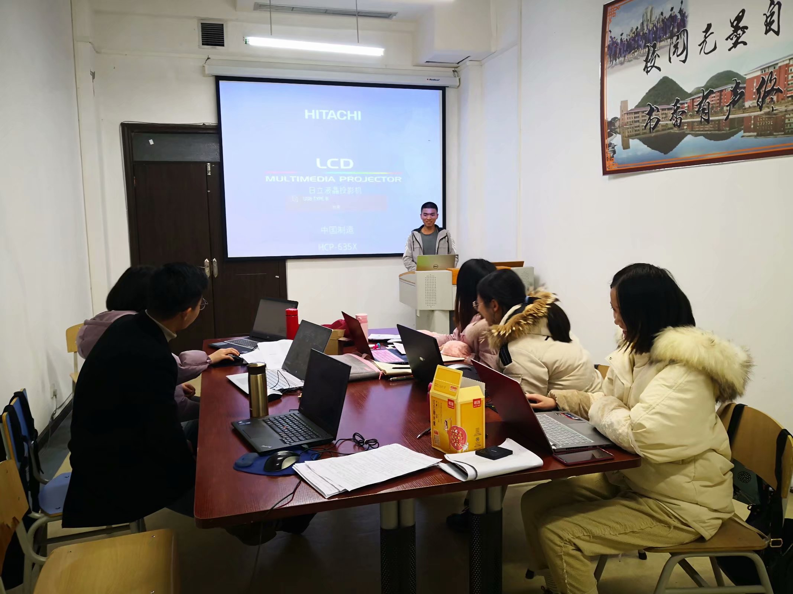
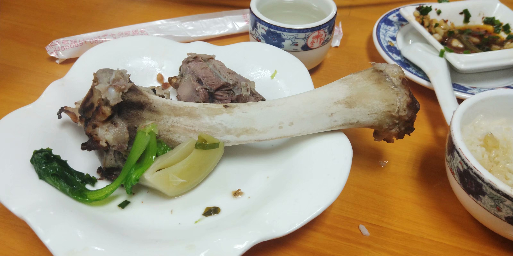
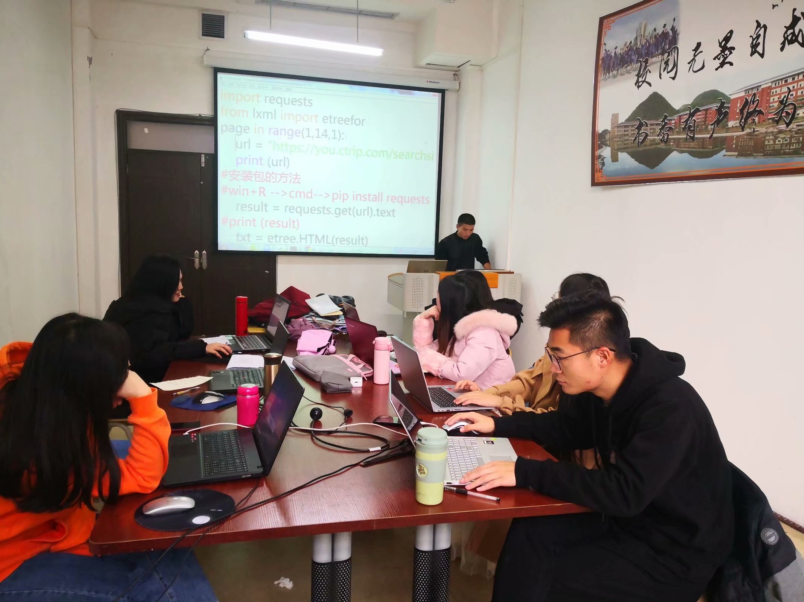
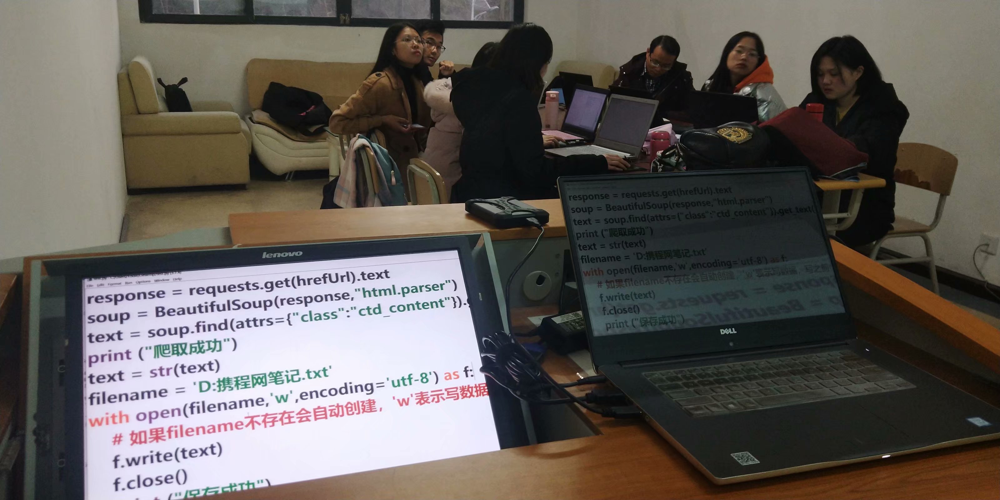

第一次研究生课堂:
很幸运受研究生院舒老师邀请，给研究生学长学姐老师讲课，共同学习数据挖掘。计算机运用将会成为一种趋势，在曾经的计算机类专业还不觉得如此重要，但是现在的科研，必须用数据来说话支撑，在商业上想要数据来搞销售，报告有数据支持也会变得更漂亮......

课堂上大家学习都极富激情，大数据在贵州也将会种力量在推进。上课的途中，教室的多媒体曾自动关机两次，它是有点小脾气了，非得让我们下课。
晚上和大家来到三食堂吃了一顿火锅，随便掏出U盘帮忙装了个系统。大家都太热情，听说我没有上三位数，结果用肉把我的碗堆满，让我多补充一下，感谢舒老师的热情邀请。

还得感谢秀璋老师为我在后面出谋划策，教我怎么去准备课堂，虽然中途易辙，但也是万法同宗，还压得住场，真的只有不断学习才不会被社会淘汰，下周继续完成未完成的课程！
第二次研究生课堂:
这是第二次到研究生院讲python数据挖掘，通过两个课堂的时间，带领大家认识python编程，爬取携程旅行网攻略笔记，以实践驱动学习。

本堂课爬取文章的流程：
1、分析并构造URL
2、使用lxml提取网页链接，字符串拼接
3、请求网页源代码
4、使用bs4提取文本信息
5、将数据保存到txt文件
6、开始爬取所有数据

学习一样东西很难，想把学会的东西传下去，同样也是很难，在每次的分析都会有些收获，看来还有很长的路需要走。最后要特别感谢工商研究生学长学姐和老师的信任与支持，未来一起加油!